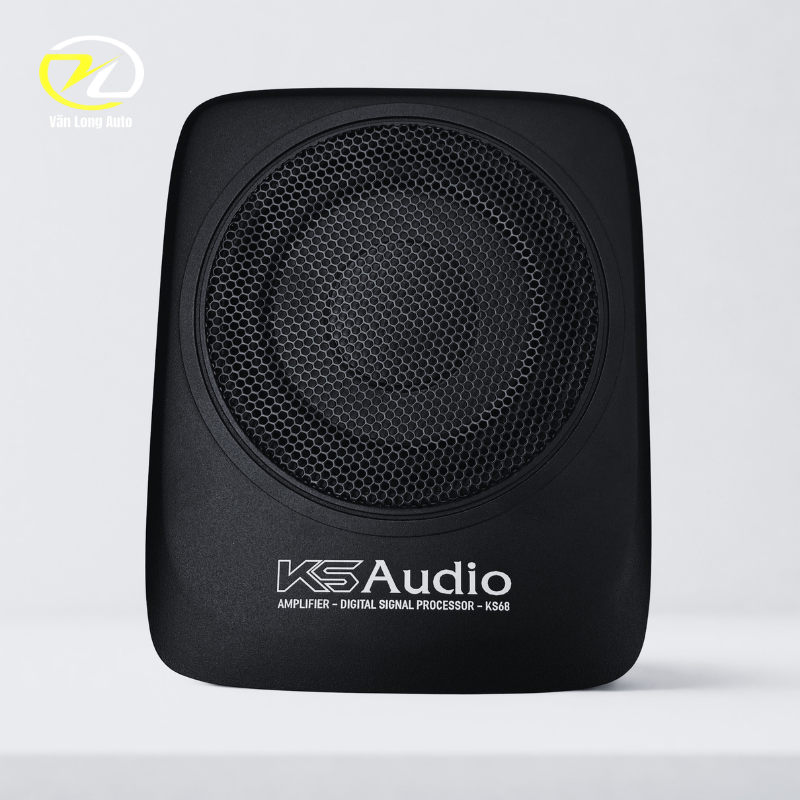
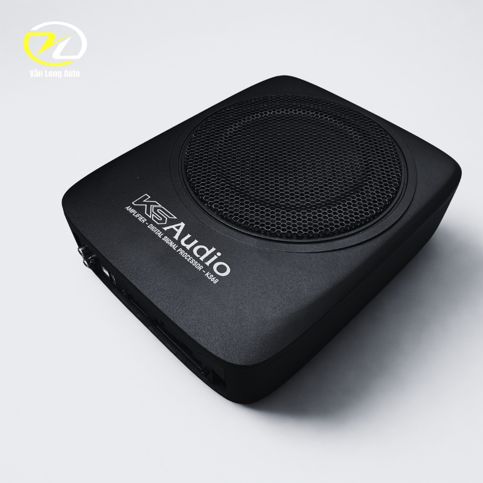
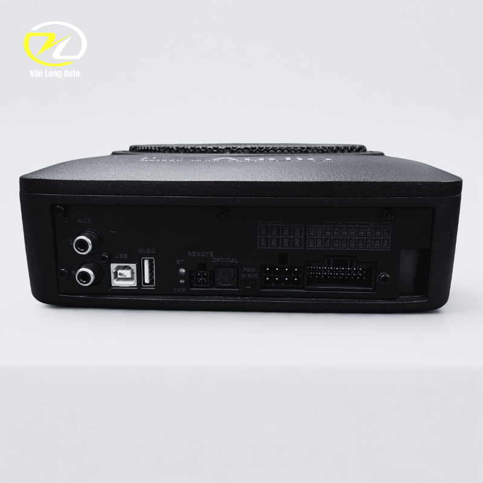

Tổng quan KS Audio KS68
KS Audio KS68 kết hợp loa sub điện, bộ xử lý tín hiệu số DSP và ampli trong cùng một thiết bị. Cấu hình này giúp nâng cấp dải trầm đồng thời hỗ trợ xử lý tín hiệu cho hệ thống loa trên xe mà không phải bố trí quá nhiều thiết bị rời.

Tích hợp DSP 8 kênh và amply 6 kênh
DSP hỗ trợ tinh chỉnh và cân bằng tín hiệu âm thanh, trong khi amply tích hợp đảm nhiệm khuếch đại cho hệ thống. Đây là điểm phù hợp với các cấu hình muốn nâng cấp tổng thể nhưng vẫn ưu tiên sự gọn gàng.

Bổ sung dải bass rõ và chắc
Loa 6.5 inch có công suất 100W RMS và hoạt động trong dải 50Hz–150Hz, tập trung bổ sung phần âm trầm cho hệ thống loa nguyên bản.

Thiết kế gọn, linh hoạt khi lắp đặt
KS68 được mô tả theo hướng nhỏ gọn, có thể cân nhắc bố trí dưới ghế hoặc vị trí phù hợp khác tùy cấu trúc khoang xe.
Lắp đặt & tư vấn cấu hình
Trước khi lắp đặt, Văn Long Auto sẽ kiểm tra hệ thống âm thanh nguyên bản, vị trí bố trí thiết bị và tín hiệu đầu vào để lựa chọn cấu hình phù hợp.
- Kiểm tra hệ thống loa và đầu phát hiện tại.
- Chọn vị trí lắp phù hợp với không gian từng dòng xe.
- Đi dây gọn gàng và ưu tiên an toàn hệ thống điện.
- Cân chỉnh DSP và mức bass sau khi hoàn thiện.